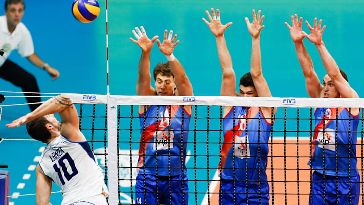

Volleyball
Rules
There are many rules in volleyball, some of the basic rules are:
- 6 players on a team, 3 on the front row and 3 on the back
row
- Maximum of three hits per side
- Player may not hit the ball twice in succession (A block is not
considered a hit)
- Ball may be played off the net during a volley and on a serve
- A ball hitting a boundary line is "in"
- A ball is "out" if it hits...
an antennae,
the floor completely outside the court,
any of the net or cables outside the antennae,
the referee stand or pole,
the ceiling above a non-playable area
- It is legal to contact the ball with any part of a players body
- It is illegal to catch, hold, or throw the ball
- If two or more players contact the ball at the same time, it is
considered one play and either player involved may make the
next contact (provided the next contact isn't the teams 4th hit)
- A player can not block or attack a serve from on or inside the
10 foot line
- After the serve, front line players may switch positions at the
net

https://olympics.com/en/featured-news/how-to-play-volleyball-rules-game-court-about-match-set-smash-spike